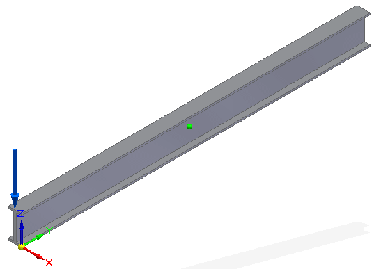
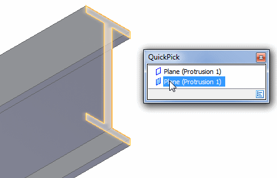
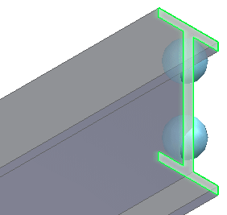
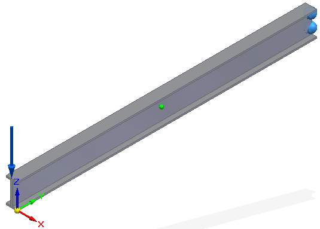

Activity: Apply a fixed constraint
-
Open the model document, FE_I-Beam_Sim.par, which contains a structural study and a predefined force load.
Simulation models are delivered in the \Program Files\Siemens\Solid Edge 2023\Training\Simulation folder.

-
Place a fixed constraint:
-
Select Simulation tab→Constraints group→Fixed.

-
Zoom in on the right end of the beam. Use QuickPick to select the end face.

A preview of the fixed constraint appears on the face.

-
Enlarge the constraint symbol size by selecting the Symbol Size/Spacing button
 on the Constraints command bar, and then moving the top slider towards Large. Click OK to update the symbol.
on the Constraints command bar, and then moving the top slider towards Large. Click OK to update the symbol. -
To finish placing the constraint, right-click or press Enter.
-
-
Click Fit to see the beam with the fixed constraint as well as the previously applied force.

-
Close this file:
How do I
Define a constraintActivity: Apply pinned and no rotation constraints
Activity: Apply a sliding along surface constraint
Activity: Apply a user defined constraint
Edit a constraint
Learn more
Creating and using constraintsConstraints
Constraint symbols
Constraint labels